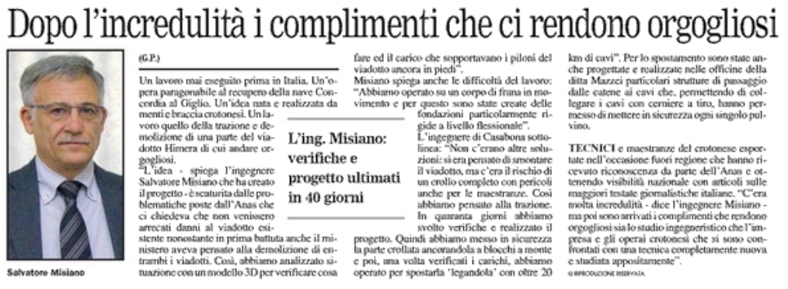
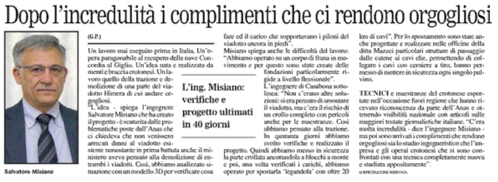

Di seguito troverete articoli e video che attestano il successo dei nostri lavori tramite giornali, televisioni e social network.
Per rimanere aggiornati sul nostro flusso di lavoro potete seguire la nostra pagina Facebook e il canale YouTube
 

(Testo riportato)
Il sistema è stato progettato dall'ing. Salvatore Misiano per poter esercitare anche in modo differenziale il tiro sui singoli pulvini.
Si è lavorato in condizioni di assoluta sicurezza e con l'ausilio di un sistema di controllo elettronico, un monitoraggio continuo delle notevoli forze in gioco e dei conseguenti spostamenti dei singoli componenti in direzione X, Y e Z.
Intervista Esperia TV
Intervista all'Ing. Salvatore Misiano da parte del dott. Salvatore Audia, realizzata negli studi di EsperiaTV l' 08/01/2016.
Argomento Viadotto Himera autostrada Palermo Catania in qualità di progettista della demolizione controllata.
Impresa esecutrice Mazzei Salvatore s.r.l. Crotone
Committente ANAS S.p.a.
Video and description by
Misiano Ingegneria (YouTube Channel)

Demolizione viadotto Himera - Autostrada Palermo Catania
Tutti i momenti della preparazione della demolizione con micro cariche del viadotto di cinque campate per un totale di 250 metri.
Riprese video con l’ausilio di 7 videocamere posizionate.
Copyright Nonexplo Italia srl - Fabriano (An) Italy
Riprese e Montaggio Dedalo srl - Fabriano (An) Italy
Video and description by
Non-Explo Italia srl (YouTube Channel)